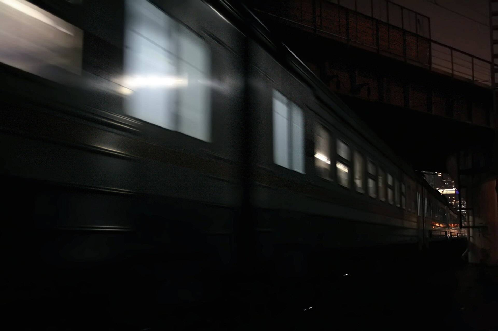

Rain, wind,
a distant train.
Lull layers all three, then fades them out once you fall asleep.
Tonight
Sample mix
60
Rain
35
Wind
15
Distant train
Fade out
in 30 min
Three sounds, one mix.
Each has its own level, so rain can lead and the train stays far off.
Rain
Leads the mix, steady on the glass.
60Wind
Sits under the rain.
35Distant trains
Kept low, far off behind the rest.
15
Tonight
Sample mix
60
Rain
35
Wind
15
Distant train
Fade outWhen you fall asleep
Sample levels. Move a fader here or above; the night and the sound follow.
The train stays far off.
Low in the mix, for ears that notice everything.

Then it fades out.
Once you fall asleep, all three drop away together.
-
While you drift off
Rain 60Wind 35Train 15
-
Asleep, fading
Rain 18Wind 9Train 4
-
Quiet until morning
All three at 0
One price, every night.
All three sounds and the fade, for three pounds a month.